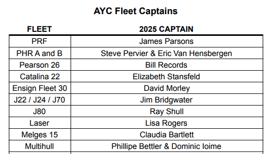
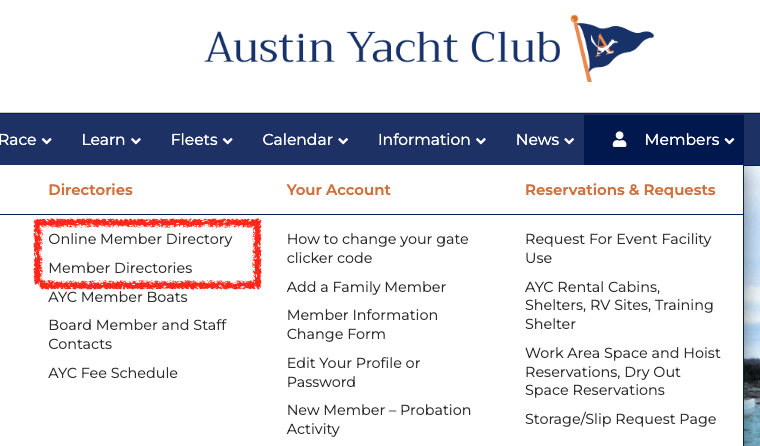

Want to be successful? Show up and be seen!
Ready to Race Single Handed?
Have a Laser or Sunfish? Join 20+ other sailors for Wednesday evening races!
View Racing ScheduleWant to Crew on Someone's Boat?
Show Up & Sail
Come to any race and sit on the crew bench - someone will pick you up! We always clear the crew bench.

Below the AYC Clubhouse: Google Maps Link
Online Crew List
Join our crew finder email list to connect with boat owners looking for crew
ayc-find-a-crew@googlegroups.comThis Group was made by former commodore Russ Shermer
Want to know what's happening this week at the club?
View AYC CalendarWant to know who to contact to learn more?
Find the Fleet Captain or Committee Member you may be looking for here:
View AYC Committees and Fleet CaptainsThe list will look like this: 
And AFTER SIGNING IN you can search for their information here: 
Reaching out to your fleet captain is a great way to integrate yourself!
If you break your boat or are looking to buy or repair a boat
You'll have to pass by member Fred Schroth's fiberglass repair shop on the way in and out of the club:
Probationary Points
Starting on page 12 of the handbook (austinyachtclub.net/handbook/), you'll find you'll need to interact with the club to become a full member:
You can call Jackie, our general manager, +1 512 266 1336 (AYC General Manager) to get recommendations on how to get these points if you are lost.
We recommend:
1) For Race Committee: Show up well before a race. Next to the crew bench is the race committee locker, where you'll be able to hop on the RC boat and learn how it works. We need RC every Wednesday night.
2) For Races: Show up and race or crew.
3) For Work Party: Reach out to the head of buildings and grounds to find out when the next one is.
4) For Social: Look on the calendar for who may be running an event and offer to help.
5) Board meetings are the 4th Thursday and can be found on the AYC calendar (austinyachtclub.net/full-ayc-calendar/). Just show up and watch the process.